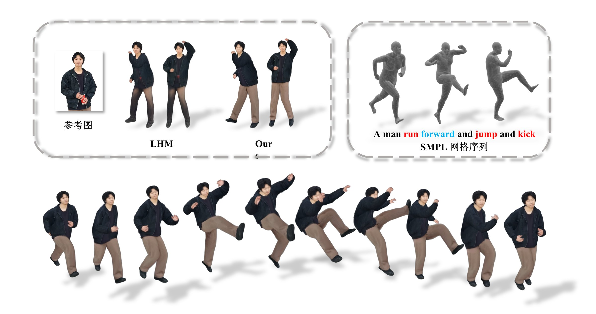
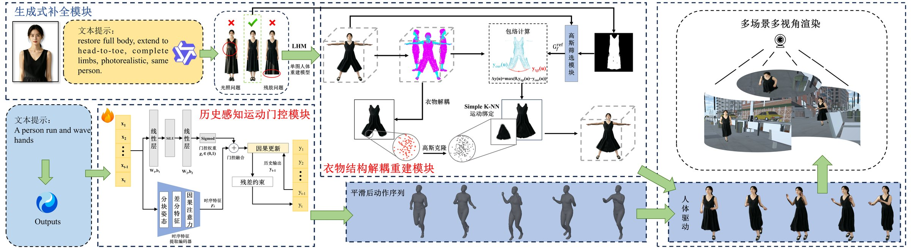
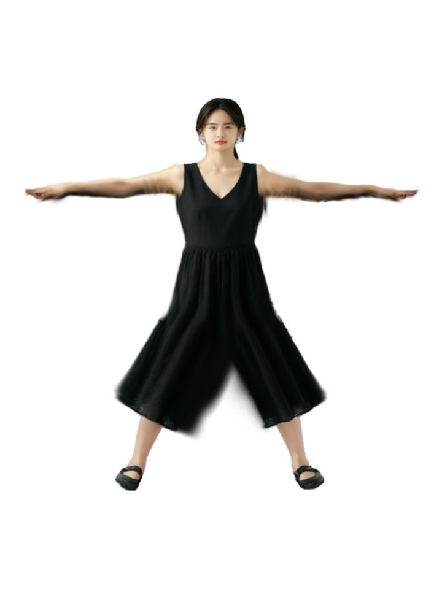
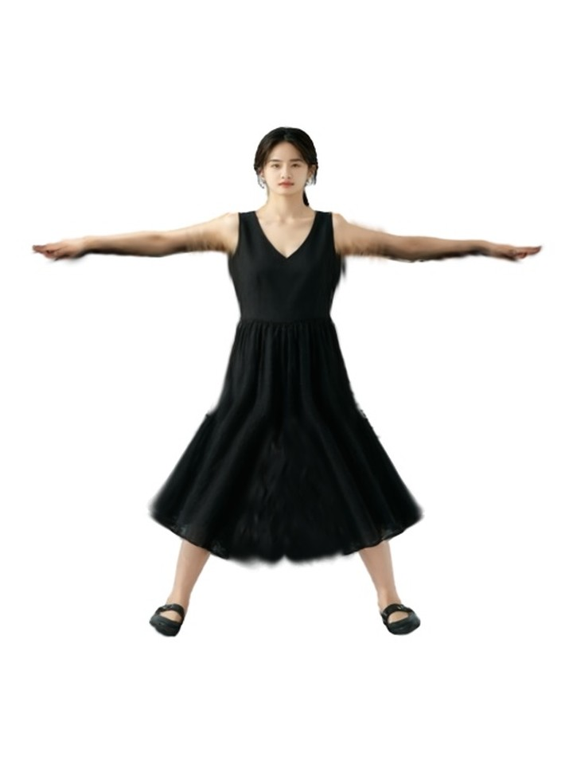

Abstract摘要
现有三维高斯数字人生成方法对输入质量要求苛刻，动态运动中容易因局部信息缺失导致衣物几何不连续，可控性与时序一致性也不足。针对这些问题，本文提出一种仅以单张半身照为输入、融合生成式补全与衣物结构解耦的数字人动画生成框架。首先，设计生成式补全与主体提取相结合的预处理模块，提升单图重建的完整性与身份一致性；继而，构建面向服装区域的结构解耦重建模块（CDRM），通过目标包络估计、高斯克隆与属性迁移实现复杂衣物的连续补全；再引入历史感知运动门控模块（PAMG），自适应抑制动作序列中的局部抖动、时序间断与幅值异常；最后，将优化后的动作序列作用于修复后的三维高斯表示，实现可部署于多种三维场景的文本可控数字人动画。
Method方法概览
生成式补全
补全半身照缺失的下半身并提取主体，保留原图中的人脸与服装外观，供单图三维高斯重建使用。
02衣物结构解耦重建 CDRM
估计裙装目标包络，克隆高斯并迁移属性，补全腿间缺失的衣物，使裙摆在大幅动作中保持连续。
03历史感知运动门控 PAMG
根据历史运动状态自适应门控文本生成的动作序列，抑制局部抖动、时序间断与幅值异常。

Clothing衣物结构解耦重建
单图重建的长裙在双腿之间缺失高斯，展开到模板姿态后裙摆从中间裂开，驱动时裂缝随腿部运动暴露。CDRM 依据目标包络克隆并迁移高斯，补全缺失的衣物。拖动滑块对比规范空间中的同一个数字人。


LHM（无服装修复） ＋CDRM（本文）左侧为 LHM 直接重建，右侧加入 CDRM（规范空间模板姿态渲染）；可按 ← → 键移动滑块。
3D任意视角
重建结果是完整的三维高斯表示，不只是正面图像。在人物上左右拖动即可旋转查看。
拖动旋转 · 松开后继续自动旋转
Motion历史感知运动门控
文本生成的动作常带有脚底打滑与局部抖动。下方两段视频驱动同一个男性数字人（与图 1 为同一人物），相机距离与角度相同并各自跟随人物；地面网格固定在世界坐标中，可据此观察支撑脚是否相对地面滑动。
两段视频共用一个时间轴；慢放或逐段拖动可以更清楚地看到足部与地面的接触。
Deployment多场景演示
Citation引用
@article{wang2026sdgs,
title = {基于结构解耦的三维高斯数字人动画生成},
author = {王雪平 and 廖偲宇 and 黄迪 and 闫飞虎 and 赵光哲},
journal = {计算机辅助设计与图形学学报},
year = {2026},
note = {审稿中}
}